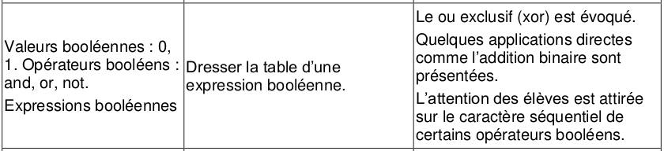

CH2 : Les opérateurs booléens⚓︎
Programme officiel

1. Le calcul booléen⚓︎
1.1 Un peu d'histoire⚓︎

En 1847, le britannique George BOOLE inventa un formalisme permettant d'écrire des raisonnements logiques : l'algèbre de Boole. La notion même d'informatique n'existait pas à l'époque, même si les calculs étaient déjà automatisés (penser à la Pascaline de 1642).
Bien plus tard, en 1938, les travaux de l'américain Claude SHANNON prouva que des circuits électriques peuvent résoudre tous les problèmes que l'algèbre de Boole peut elle-même résoudre. Pendant la deuxième guerre mondiale, les travaux d'Alan TURING puis de John VON NEUMANN poseront définitivement les bases de l'informatique moderne.
1.2 Variable booléenne⚓︎
À savoir
Une variable booléenne est une variable qui ne peut prendre que deux valeurs possibles :
- Vrai (
True ) ou 1
) ou 1 - Faux (
False) ou 0
Une variable booléenne en Python est du type bool.
>>> a = False
>>> print(type(a))
<class 'bool'>
Remarque : Ouvert/Fermé (interrupteur), Allumé/Éteint (lampe), 5V/0V (tension), Blanc/Noir (pixels d'une image noir et blanc) ... sont également des variables booléennes.
1.3 Opérateurs booléens⚓︎
- Un opérateur booléen est un opérateur mathématique qui manipule des variables booléennes.
- Une expression booléenne est une expression dont le résultat est un booléen.
- Un opérande est un élément sur lequel on applique un opérateur booléen.
a. L'opérateur not⚓︎
À connaître
L'opérateur not ("non"  ) est l'opérateur de négation : si on note a la variable d'entrée, not a ou \(\mathrm{\overline{a}}\) renvoie la négation de a.
) est l'opérateur de négation : si on note a la variable d'entrée, not a ou \(\mathrm{\overline{a}}\) renvoie la négation de a.
Table de vérité de not
| a | not a |
|---|---|
| 0 | 1 |
| 1 | 0 |
En python
>>> a = True
>>> print(not a)
False
>>> b = not a
>>> print(not b)
True
b. L'opérateur and⚓︎
À connaître
L'opérateur and ("et" ) est un opérateur de conjonction. Si a et b sont deux variables booléennes, a and b renvoie Vrai si a et b sont Vrai toutes les deux, et Faux sinon.
La table de vérité de and
| a | b | a and b |
|---|---|---|
| 0 | 0 | 0 |
| 0 | 1 | 0 |
| 1 | 0 | 0 |
| 1 | 1 | 1 |
En python
>>> a = True
>>> b = True
>>> c = False
>>> print(a and b)
True
>>> print(c and b)
False
c. L'opérateur or⚓︎
À connaître
L'opérateur or ("ou" ) est un opérateur de disjonction. Si a et b sont deux variables booléennes, a or b renvoie Vrai quand au moins un des deux opérandes a ou b sont Vrai, et Faux sinon.
La table de vérité de or
| a | b | a or b |
|---|---|---|
| 0 | 0 | 0 |
| 0 | 1 | 1 |
| 1 | 0 | 1 |
| 1 | 1 | 1 |
En python
>>> a = True
>>> b = True
>>> c = False
>>> d = False
>>> print(a or b)
True
>>> print(c or b)
True
>>> print(d or c)
False
d. L'opérateur xor⚓︎
À savoir
L'opérateur xor ("ou exclusif" ) est un opérateur de disjonction exclusive. Si a et b sont deux variables booléennes, a xor b renvoie Vrai un seul des deux opérandes a ou b sont Vrai, et Faux sinon.
La table de vérité de xor
| a | b | a xor b |
|---|---|---|
| 0 | 0 | 0 |
| 0 | 1 | 1 |
| 1 | 0 | 1 |
| 1 | 1 | 0 |
1.4 Évaluation d'une expression booléenne⚓︎
À connaître
Il faut faire comme en mathématique. On doit tenir compte de la priorité des opérations et des parenthèses. Le not est prioritaire devant and qui lui-même est prioritaire devant or ou xor.
Expression comportant uniquement des valeurs booléennes⚓︎
Exemple : A = True and True or (not False and False)
On commence par la parenthèse ( not False devient True puis True and False devient False : A = True and True or (True and False) = True and True or False
Puis and est prioritaire devant or (donc True and True devient True): A = True or False
On a enfin A = True
Expression comportant des variables booléennes⚓︎
Pour évaluer l'expression, on peut établir une table de vérité. Il faut faire la table de vérité de chaque partie de l'expression en tenant compte des règles précédentes.
Exemple de l'expression a or not b :
| a | b | not b | a or not b |
|---|---|---|---|
| 0 | 0 | 1 | 1 |
| 0 | 1 | 0 | 0 |
| 1 | 0 | 1 | 1 |
| 1 | 1 | 0 | 1 |
1.5 Les expressions booléennes et python⚓︎
Les opérateurs booléens⚓︎
Remarque 1 :⚓︎
Les opérateurs booléens sont not, and et or.
Ne pas confondre avec les opérateurs de comparaison qui renvoient une valeur booléenne.
>>> 4 // 2 == 3
False
>>> (7 > 3) and (9 != 8) and not False
True
Dans ces deux exemples ==, >, != sont des opérateurs de comparaison qui renvoient un booléen.
Remarque 2 :⚓︎
Python pratique l'évaluation paresseuse (short-circuit evaluation  ). L'évaluation paresseuse le fait que l'interpréteur Python s'arrête dès que sa décision est prise.
). L'évaluation paresseuse le fait que l'interpréteur Python s'arrête dès que sa décision est prise.
Exemple :
>>> (20 // 2 == 8) and (20 // 4 == 5)
False
Comme le premier booléen vaut False et que la conjonction and est appelée, il n'est pas nécessaire d'évaluer le deuxième booléen.
Essayez de lancer dans le terminal ci-dessous : False and print("Salut") et comparez le à True and print("Salut"). Comparez ensuite avec l'opérateur or.
2. De l'expression booléenne au composant électronique⚓︎
2.1 Un peu d'histoire⚓︎
Les circuits d’un ordinateur manipulent uniquement des 0 ou des 1 représentés en interne par des tensions hautes ou basses. Les premiers ordinateurs construits dans la période 1945-1950 sont basés sur une technologie de tube à vide ou tube électrique.
En 1947, aux laboratoires Bell, Shockley, Bardeen et Brattain inventent le transistor, un petit composant électronique qui se comporte comme un interrupteur. Les transistors, plus petits et dissipant moins de chaleur, vont supplanter les tubes électriques. En 1954 le germanium est remplacé par le silicium, en 1955 apparaissent les premiers ordinateurs entièrement transistorisés. En 1960 le transistor à effet de champ permet l’intégration de dizaines composants dans un centimètre carré. Les transistors sont ensuite directement gravés dans une plaque de silicium constituant un cicrcuit intégré.
En 1965, Gordon Moore futur directeur d’Intel énonce la loi empirique suivante : il y aura doublement de la densité d’intégration des transistors tous les deux ans. Cette loi s’est vérifiée jusqu’à présent avec une finesse de gravure d’environ 5 nanomètres en 2020. Le graphique ci-dessous représente l’évolution du nombre de transistors par circuit intégré.
2.2 Les portes logiques⚓︎
Dans un ordinateur, les opérations de calcul sont effectuées en binaire, à l'aide de portes logiques. En associant des transistors, on réalise ces portes logiques. Une porte logique est un circuit électronique représentant une fonction logique.
Voici ci-dessous la représentation de quelques portes (représentation américaine et internationnale)
2.3 Circuit combinatoire⚓︎
Un circuit logique combinatoire permet de réaliser une ou plusieurs fonctions booléennes : ses sorties ne dépendent que de l'état actuel de ses entrées. Les portes logiques NOT, NOR, NAND, AND, OR et XOR sont des circuits combinatoires.
Exemple
Déterminer la fonction logique réaliser par ce circuit.
Réaliser des circuits logiques et les tester ici
On a réalisé une porte xor.
Vous pouvez vérifier que (a and not b) or (not a and b) = a xor b
Il existe d'autres circuits, dits séquentiels, dont les sorties se calculent non seulement à partir de leurs valeurs d’entrée actuelles mais aussi à partir de leurs états précédents : le facteur temps intervient. Ils utilisent des circuits de mémoire pour mémoriser leurs états antérieurs.